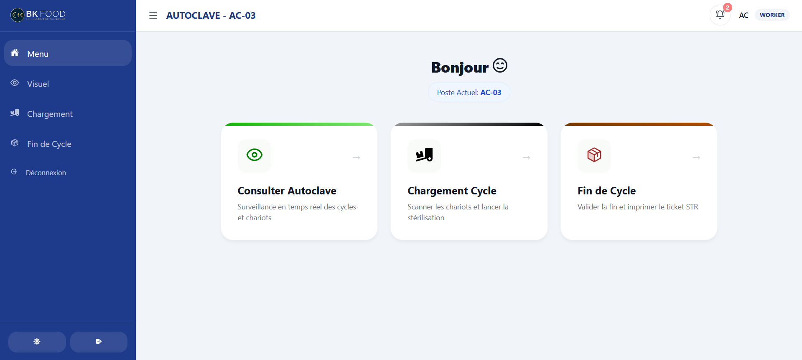

🏗️
Graduation Project
BK-Prod
In Production

A full web platform for construction sites to track the entry and exit of materials, equipment, and workers in real time. It replaces paper logbooks with a digital system that's structured, searchable, and audit-friendly.
Currently deployed and used daily at an active construction company — the highest compliment a student project can get.